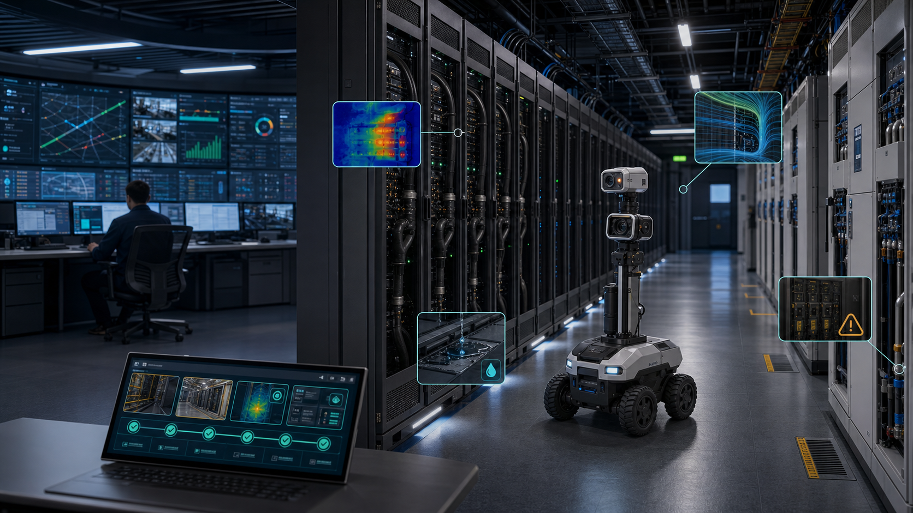

智算运营方
关心可计费 GPU 小时、SLA、客户续约和故障复盘，不只是机房告警数量。
01 · Problem
一个推理延迟飙升或节点掉卡，会穿过作业队列、加速卡、网络、存储、液冷、电力、工单和值班群。DCIM 看设施，Prometheus/Grafana 看指标，BMS 看机电，调度器看任务，客户成功看 SLA。工具都能报警，但谁负责结论、动作、验证和复盘，常常断在跨系统协作里。
关心可计费 GPU 小时、SLA、客户续约和故障复盘，不只是机房告警数量。
UPS、PDU、CDU、液冷、漏液、气流和 PUE 异常需要和作业影响对齐。
要判断是节点、网络、存储、调度、模型服务还是物理设施导致性能下降。
需要事件时间线、处理证据、SLA 归因和审计材料，而不是事后补记录。
02 · Why Now
AI 数据中心正在从机房变成 AI 工厂。高密机柜、液冷、算电协同、绿电/PUE 约束、推理 SLA 和人才短缺同时到来。新增算力很贵，稳定已有算力开始变成更便宜的增长方式。
03 · Core Insight
同一次异常会同时表现为 GPU 降频、作业失败、冷却支路流量下降、PUE 漂移、漏液传感器告警和客户 SLA 风险。真正有价值的不是再显示一条曲线，而是把这些信号合并成一个可执行事件，并证明算力已经恢复。
把 137 条告警压成一个影响图：哪些机柜、哪些卡、哪些作业、哪些客户受影响。
给出可审批动作：迁移任务、隔离节点、通知设施、开工单、补拍证据。
验证 p99、GPU 利用率、失败率、热像、漏液、PUE 和工单状态已恢复。
04 · Solution
它不替代 DCIM/BMS/EMS/NMS/SOC/CMDB、调度器、工单系统、消防报警或合规系统，也不直接控制真实配电、制冷或消防。它站在这些系统上面，把跨层异常变成可执行、可验证、可复盘的事件。

05 · Product Workflow
ComputeLoop 的第一版不做全自动控制。它先做影子模式和辅助闭环：把 Top 20 告警合并、定位、派发、复核、复盘跑顺，再逐步开放人工审批后的低风险动作。
DCIM/BMS/PDU/UPS/CDU、GPU telemetry、K8s/Slurm、网络、工单和机器人证据。
把重复告警按机柜、节点、作业、液冷支路、客户和时间窗口合并。
识别可能根因：液冷流量下降、热热点、PDU 异常、节点掉卡、网络抖动。
人审后执行迁移、隔离、通知、工单、巡检、低风险演示动作或手动操作指引。
确认 SLA、利用率、失败率、热像、漏液、能耗和工单证据都已恢复。
06 · Market Wedge
超大云厂有自研运维能力，小机房痛感不够。最佳切口是新建或改造中的智算中心、neocloud、行业推理平台、政企私有智算、算力券/训力券平台和高密液冷 pod：规模足够痛，流程还没有完全固化。
CDU、流量、温差、漏液、冷却容量和机柜热像形成闭环。
p99、失败率、GPU 利用率、作业队列和客户影响统一到异常 ID。
PUE 漂移、异常能耗小时、绿电占比和碳效报表变成可追溯事件。
机器人热像、漏液、气流和功耗取证减少无效跑腿和证据缺口。
GPU、BMC、PDU、UPS、电池、风扇、传感器失效和维护逾期合并派单。
等保、CII、云安全评估、节能审查和事故复盘需要完整留痕。
07 · Business Model
首单卖“异常体检 + 影子模式 + 辅助闭环”，让客户先看到 MTTD、MTTA、MTTR、告警压缩、证据完整率、巡检工时和 PUE 异常响应的变化。年度合同再扩到多站、液冷、容量和 SLA 模块。
人民币 18万-30万，1 个智算 pod 或 20-50 个高密柜，最多 1MW IT 负载。
人民币 500-1200 元/柜/月，高密/液冷柜取上沿，单站最低 30万-60万/年。
液冷/漏液、PUE/能耗、容量降额、SLA 审计、机器人取证和 7x24 托管闭环。
对 PUE 改善、异常能耗小时、可售 kW 恢复和巡检工时减少做封顶成功费。
08 · Go-To-Market
中国通过电信云、地方国资数据集团、智算运营商、数据中心 EPC/O&M 集成商、液冷 OEM、能源服务公司和园区算力平台进入。海外从 colo、neocloud、AI infrastructure operator 和高密改造项目切入。
不改配置、不接管控制，先压缩噪声告警、生成影响图、验证闭环证据。
液冷、热像、漏液、PUE 和 GPU 降频的业务影响最容易讲清楚。
私有化部署、数据不出域、角色权限、日志、证据哈希和审计导出。
从一个 pod 扩到站点、园区、多城算力网络和算电协同调度证据。
09 · Competition
Prometheus、Grafana、Zabbix 看指标；Schneider EcoStruxure IT、Nlyte、Sunbird、Eaton、ABB 看设施和资产；ServiceNow/PagerDuty 派工单；硬件管理套件管设备；液冷和漏液厂商看局部信号。ComputeLoop 做跨工作负载、硬件、网络、设施和工单的恢复闭环。
强在可观测和资产记录，但通常不以“业务影响到修复验证”为中心。
强在设备级告警、传感器和维护，但跨供应商事件链常常断开。
事故图谱、处置动作库、连接器、安全执行策略、证据包和复盘反馈数据。
10 · Moat
护城河不是一个通用告警模型，而是客户自己的事故图谱：节点、机柜、液冷支路、PDU、作业、客户、SOP、人工动作、验证证据和最终结果。越多异常闭环，越知道哪些动作有效、哪些告警是噪声、哪些供应商和机柜组合风险高。
作业、GPU、机柜、冷却、电力、网络、客户和 SLA 的多层关联。
MOP/EOP/SOP、审批策略、回滚条件和验证指标沉淀成动作资产。
热像、漏液、rosbag、工单、时间线、模型版本和人工结论可回放。
数据驻留、权限、日志、等保、云安全评估和审计要求带来真实粘性。
11 · Architecture
ComputeLoop 的架构要让运维和合规都放心：只读接入、隔离部署、人审动作、证据留痕、模型版本、可回滚 runbook、本地化数据平面和可禁用的执行入口。
12 · Demo
桌面 rig 使用 5V/12V/24V DC、保险丝、限流、物理急停、透明罩、4-6 个机柜模型、冷热通道、LED 假负载、PTC 受控热源、独立漏液托盘、风扇/挡板气流 surrogate 和低速巡检 rover。所有处置动作只作用于演示风扇、假负载、警示灯或标签舵机。
Rover 巡检 rack mockup，采集 RGB、热像、漏液、气流、功耗和位姿。
触发热热点、漏液托盘、气流下降、假负载功耗异常或维护逾期场景。
生成 manifest、timeline、media、rosbag2、decision 和 chain-of-custody 证据包。
人审后只执行 demo-only 动作：开风扇、亮灯、贴标签、降低假负载。
导出 LeRobot episode、QNN 候选模型结果、证据哈希和复盘报告。
13 · Why Qualcomm
Qualcomm 的数据中心和边缘 AI 叙事强调能效、推理吞吐、tokens/watt、机柜级部署和设备化生态。ComputeLoop 把这些优势转成客户能看见的结果：上线更稳、故障更快闭环、证据更完整、PUE/液冷/算力恢复更可追踪。
热斑、漏液、机柜识别、障碍、气流和巡检证据适合站端本地推理。
把 YOLOX、DeepLabV3+、UNet、Depth Anything 等候选模型编译和 profile。
用稳定性和 TCO 闭环支撑 Qualcomm 高能效推理进入智算中心。
巡检失败、人工 verdict 和闭环结果持续进入 LeRobot 数据集。
14 · Ask
我们需要把桌面样机推到可信的行业场景：边缘开发板、AI Hub/QNN 评测、数据中心导师、液冷/机房集成伙伴和 2-3 个设计客户。
Qualcomm edge 开发板、AI Hub/QNN profiling、视觉/热像/多传感模型建议。
1 个低压 rack rig，覆盖热、漏、气流、功耗、机器人和证据闭环。
2-3 个智算中心、neocloud、液冷 pod 或企业私有算力平台访谈/试点。
进入 Qualcomm AI infrastructure / edge robotics 伙伴方案叙事。
15 · Claims & Sources
页面主张低压桌面模拟、边缘 AI 巡检、ROS 2 异常闭环、证据包、人审工单、LeRobot 数据集和 Qualcomm edge 候选路径。它不主张自动控制真实配电、制冷、消防或安全系统，不替代 DCIM/BMS/消防报警/漏水检测，不承诺零误报或认证合规。
一句话 pitch：ComputeLoop 把智算中心异常从“报警太多、结论太少”推进到“影响清楚、动作明确、恢复可验证”。